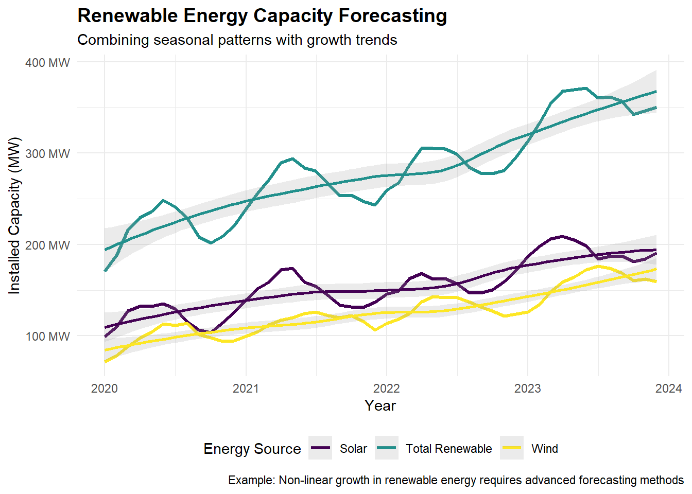

# Combine ARIMA with machine learning
library(fable)
library(tidymodels)
# Solar energy forecasting with multiple methods
solar_forecasts <- energy_data %>%
model(
arima = ARIMA(solar_production ~ temperature + sunlight_hours),
prophet = prophet(solar_production ~ growth() + season('day') +
regressor(temperature, sunlight_hours)),
rf = rand_forest() %>%
set_engine("ranger") %>%
fit(solar_production ~ lag(solar_production, 1:7) +
temperature + season + trend)
) %>%
forecast(h = "30 days")
# Ensemble forecasting
ensemble_forecast <- solar_forecasts %>%
summarise(
point_forecast = mean(point_forecast),
lower_95 = quantile(distribution, 0.025),
upper_95 = quantile(distribution, 0.975)
)EC614: Macroeconomic Forecasting
Prof.Dr.Zahid Asghar, School of Economics
Quaid-i-Azam University, Islamabad
Course Overview and Learning Outcomes
Research in economics, business and finance requires extensive use of sophisticated and refined quantitative skills. This course provides a comprehensive introduction to modern macroeconomic forecasting methods, combining traditional econometric approaches with contemporary machine learning techniques. Students will master the art and science of forecasting economic variables, with special attention to emerging sectors like renewable energy, technological adoption, and digital economies that often defy conventional modeling approaches.
Upon completion, students will be able to: - Decompose complex time series into constituent components using advanced visualization and statistical methods - Apply appropriate econometric models to various types of macroeconomic data - Understand and implement dynamic macroeconometric models for policy analysis - Estimate and interpret both univariate and multivariate time series models - Utilize machine learning techniques for non-linear and high-dimensional forecasting problems - Handle unconventional data sources and forecast technology-driven variables (solar energy adoption, digital payment systems, etc.) - Conduct seasonal adjustment using X-12 ARIMA and advanced methods - Integrate multiple data sources for robust forecasting frameworks - Critically evaluate forecast performance and uncertainty
Instructional Method
Structure – The course integrates three complementary approaches:
Traditional Econometrics: Foundation in time series analysis and classical forecasting
Modern Machine Learning: Advanced techniques for complex, non-linear patterns
Applied Innovation: Real-world applications including renewable energy forecasting, technology adoption curves, and digital economy indicators
Students will learn through hands-on practice using R, Python, and specialized forecasting software, working with both conventional macroeconomic data and emerging technology-related datasets.
Required Texts and Resources
Key Articles: - How is machine learning useful for macroeconomic forecasting? - Recent papers on renewable energy forecasting and technology adoption models - Central bank nowcasting methodologies
Detailed Course Schedule
| Week | Topic | Content & Skills | Readings & Applications |
|---|---|---|---|
| 1 | Introduction to Modern Macroeconomic Forecasting | • Four components of time series analysis • Data visualization with R/Python • Introduction to unconventional data sources |
• FPP3 Chapter 1 • Doing Economics Ch. 1–2 • Lab: Solar energy production data exploration |
| 2 | Time Series Decomposition & Exponential Smoothing | • Classical decomposition methods • STL decomposition • Exponential smoothing family • Handling irregular seasonality in tech adoption |
• FPP3 Chapters 3–8 • Case study: Wind power generation forecasting • Seasonal patterns in renewable energy |
| 3 | Dependence Structures & Correlation Analysis | • Autocorrelation and partial autocorrelation • Non-linear dependence detection • Cross-correlation analysis for technology spillovers |
• Enders Ch. 2 • Application: Cryptocurrency adoption patterns • Lab: EV sales dependencies |
| 4 | ARIMA Modeling & Extensions | • Box–Jenkins methodology • ARIMA model selection and diagnosis • SARIMA for seasonal data • Regime-switching models for technology transitions |
• FPP3 Chapters 9–10 • Enders Ch. 2–3 • Case study: Smart grid adoption forecasting |
| 5 | Advanced Forecasting Methods & Accuracy Assessment | • Dynamic regression models • Forecast combination techniques • Forecast evaluation metrics • Handling structural breaks |
• FPP3 Chapters 10–12 • Diebold–Mariano test applications • Lab: Solar panel cost forecasting |
| 6 | Applied Forecasting Laboratory | • Integrated lab session with multiple datasets • Pakistan macroeconomic indicators • Renewable energy production forecasting • Technology sector applications |
• Real-time data: Cement, M2, CPI • Energy sector: Solar/wind capacity • Technology adoption: Mobile banking, e-commerce |
| 7 | Nonstationarity & Unit Root Analysis | • Stochastic vs deterministic trends • Unit root tests (ADF, PP, KPSS) • Structural breaks and disruptions |
• Enders Ch. 4 • Technology learning curves analysis • Lab: Battery cost decline modeling |
| 8 | Multivariate Time Series: VAR Models | • Vector Autoregression (VAR) • Impulse response analysis • Forecast error variance decomposition • Technology shock transmission |
• Classic VAR papers • Sims (1980) replication • Energy–economy interactions |
| 9 | Structural VAR & Advanced Multivariate Methods | • Identification strategies in SVAR • Long-run restrictions • Time-varying parameter models |
• Modern SVAR literature • Technology adoption spillovers • Green technology policy impacts |
| 10 | Cointegration & Error Correction Models | • Johansen cointegration methodology • Vector Error Correction Models (VECM) • Long-run relationships in technology markets |
• Enders Ch. 6 • Energy prices & renewable adoption • Lab: EV & charging infrastructure |
| 11 | Panel Data Methods for Forecasting | • Dynamic panel models • Panel cointegration • Cross-sectional dependence • Country-specific adoption patterns |
• Cross-country diffusion studies • WDI renewable indicators • Global solar capacity forecasting |
| 12 | Machine Learning for Macroeconomic Forecasting I | • Ridge, LASSO, Elastic Net • Principal Component Analysis for forecasting • Factor models and FAVAR • Text data & sentiment analysis |
• Coulombe et al. (2022) • High-dimensional solar irradiance data • Web scraping energy sentiment |
| 13 | Machine Learning for Macroeconomic Forecasting II | • Random Forest & tree-based methods • Neural networks for time series • Deep learning applications • Ensemble methods and model averaging |
• Recent ML forecasting papers • Weather data for renewables • Satellite data for economic nowcasting |
| 14 | Nowcasting & Real-time Forecasting | • Mixed-frequency data models (MIDAS) • Google Trends & alternative data • Real-time data challenges • Nowcasting with unconventional indicators |
• Central bank nowcasting models • COVID-19 economic tracking innovations • High-frequency energy market indicators |
| 15 | Final Projects & Advanced Applications | • Student project presentations • Forecast combination strategies • Policy simulation & scenario analysis • Climate econometrics & carbon forecasting |
• Individual forecasting projects • Technology sector applications • Climate–economy modeling • Peer review & methodology critique |
Why R and Python for Modern Forecasting?
Free and open source with vast forecasting ecosystem
Cutting-edge packages for modern forecasting:
fablefor tidy forecasting frameworkforecastfor classical methodstidymodelsfor machine learning integrationtorchfor deep learning (when needed)
Handles any data format including:
- Satellite imagery for economic nowcasting
- Social media sentiment data
- High-frequency energy market data
Seamless integration with Python and cloud platforms
Reproducible research with R Markdown/Quarto

Modern Forecasting Capabilities

Assessment and Grading
| Component | Weight | Description |
|---|---|---|
| Midterm Exam | 25% | Traditional econometric methods and theory |
| Final Exam | 30% | Comprehensive examination including ML methods |
| Lab Assignments | 20% | Hands-on forecasting exercises (5 assignments × 4%) |
| Research Project | 20% | Original forecasting study with unconventional data |
| Class Participation | 5% | Active engagement and peer review activities |
Research Project Options: - Monetary policy transmission analysis using SVAR - International business cycle synchronization using panel VAR - Exchange rate dynamics and purchasing power parity using VECM - Inflation forecasting using factor-augmented VAR (FAVAR) - Central bank nowcasting models with mixed-frequency data - Cross-country growth convergence using panel cointegration
Prerequisites and Software Requirements
Prerequisites: - Basic econometrics (equivalent to undergraduate econometrics course) - Elementary statistics and probability - Familiarity with Excel or basic data analysis
Software Setup: - R and RStudio (primary environment) - Python (optional, for advanced ML applications) - Access to macroeconomic databases (FRED, World Bank, IMF) - Weather/satellite data APIs for technology applications
Office Hours and Support
Regular office hours: Wednesday & Thursday 2-4 PM
Online consultation available via email scheduling (whatsapp not preferred) Dedicated help sessions before major assignments
Peer learning groups encouraged for complex topics